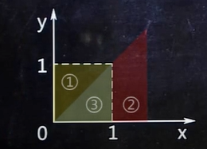
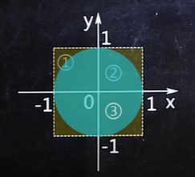
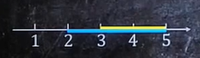
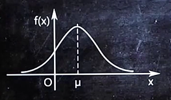

观看猴博士爱讲课-概率论与数理统计视频时，因为视频不利于搜索，所以做个详细点的听课笔记
本地用Typora与vscode均正常，但是hexo不能很好的渲染数学公式，部署到博客上不太美观。
在更新完后，如果需要md文件的可以在文末查看关键词。
一、事件的概率
1.无放回类题目
$$P = \frac{c ^{条件一取}{条件一总} \times c ^{条件一取}{条件一总} \times … \times c ^{条件一取}_{条件一总}}{c^取_总}$$
$$C^m_n = \frac{n!}{m! \cdot (n-m)}$$
（1）盒子中有4红3白共7个球，不用眼瞅，7个球摸起来一样，现无放回的摸4次，那摸出两个红球两个白球的概率是多少？
$$P=\frac{C^2_4 \times C^2_3} {C^4_7}$$
（2）隔壁山头共有11只母猴儿，其中有5只美猴儿、6只丑猴儿，在大黑天看起来是一样的。今儿月黑风高，我小弟冒死为我捞来5只，问天亮后，发现有2只美猴儿、3只丑猴儿的概率是多少？
$$P=\frac{C^2_5 \times C^3_6} {C^5_{11}}=\frac{100}{231}$$
2.有放回类题目
K种颜色的球，代号分别为$A_1、A_z…A_k$
抽一次，出现的概率分别为$p_1、p_2…p_k$
求摸出各种球的个数分别为$n_1、n_z…n_k$
$p = \frac{(n_1 + n_2 + … + n_k)!}{n_1!n_2!…n_k!}P_1^{n_1}P_2^{n_2}…P_k^{n_k}$
（1）盒子中有5红6白共11个球，不用眼瞅，11个球摸起来是一样的，现有放回的摸5次，那摸出两个红球三个白球的概率是多少？
解：
2种颜色的球，代号分别为红、白
抽一次，出现的概率分别为$\frac{5}{11}、\frac{6}{11}$
求摸出各种球的个数分别为2、3
$P = \frac{(2+3)!}{2!3!}(\frac{5}{11})^2(\frac{6}{11})^3$
（2）在小弟为我抓回的5只母猴儿中，有2美3丑，每天我都随机挑一只母猴儿来，为她抓虱子。
就这样，过去了101天，抓了101次虱子，问这101次中，为美猴儿服务50次、丑猴儿服务51次的概率是多少？
解：
2种母猴儿，代号分别为美、丑
选一只，出现概率分别为$\frac{2}{5}、\frac{3}{5}$
为2种服务次数分别为50、51
$P = \frac{(50+51)!}{50!51!} (\frac{2}{5})^{50} (\frac{3}{5})^{51}$
3.需要画图的题目
（1）已知0<x<1，0<y-1，求x>y的概率是多少？

①表现已知条件
②表现待求概率的条件
③找出①②重合部分
④$P(x>y)=\frac{③}{①}$
（2）已知小明会在0点之后1点之前到教室，小刚也是，问小明比小刚晚到的概率是多少？
设小明到教室时间为x，小刚为y
已知0<x<1，0<y<1，求x>y的概率是多少？
（3）已知-1<x<1，-1<y<1，求
$$x^2+y^2<1$$
的概率是多少？

解析：
①表现已知条件
②表现待求概率的条件
③找出①②重合部分
④$P(x^2 + y^2 < 1) = \frac { ③ }{ ① }$
解：
$$S_园 = π \times 1^2 = π$$
$$S_正 = 4$$
$$P(x^2+y^2<1) = \frac{π}{4}$$
4.条件概率
$$P(B \mid A) = \frac{ P(AB) }{ P(A) }$$
事件A：掷一次骰子，朝上点数大于3
事件B：掷一次骰子，朝上点数是6
P（B|A）：掷一次骰子，已知朝上点数大于3，朝上点数是6的概率
P（AB）：掷一次骰子，朝上点数是6的概率
P（A）：掷一次骰子，朝上点数大于3的概率
（1）小明概率论考试得80分以上的概率是80%，得60分以上的概率是85%，已知这次考试小明概率论没挂，那么小明得80分以上的概率是多少？
事件A：小明得60分以上
事件B：小明得80分以上
P（B|A）：小明得60分以上时，小明得80分以上的概率，即小明得80分以上的概率
$$P(B \mid A) = \frac{ P(AB) }{ P(A) } = \frac{ 0.8 }{ 0.85 }$$
（2）某地区今年会发生洪水的概率是80%，今明两年至少有一年会发生洪水的概率是85%，假如今年没有发生洪水，那么明年发生洪水的概率是多少？
事件A：今年没有发生洪水
事件B：明年发生洪水
P（BIA）：今年没有发生洪水的情况下，明年发洪水的概率
$$P(B \mid A) = \frac{ P(AB) }{ P(A) } = \frac{ 0.05 }{ 0.2 }$$
5.全概率公式
A、B…等个体均可能发生某事，则
$$P(发生某事)=P(A出现)·P(A发生某事)+P(B出现)·P(B发生某事)…$$
（1）某高速公路上客车中有20%是高速客车，80%是普通客车，假设高速客车发生故障的概率是0.002，普通客车发生故障的概率是0.01。求该高速公路上有客车发生故障的概率。
$$P(有客车发生故障)=P(高速客车出现)·P(高速客车故障)+P(普通客车出现)·P(普通客车故障)$$
$P(有客车发生故障)=0.2·0.002+0.8·0.01=0.0084$
(2)猴博士公司有猴博士与傻孢子两个员工，老板要抽其中一个考核，抽中猴博士与傻孢子的概率都是50%，猴博士考核通过的概率是100%，傻孢子考核通过的概率是1%，那么抽中的员工通过考核的概率是多少？
$$P（抽中的员工通过考核）=P（猴博士出现）·P猴博士通过）+P（傻孢子出现）·P（傻犯子通过）$$
$P（抽中的员工通过考核）=50%·100%+50%·1%=50.5%$
（3）又到了交配的季节，主人过两天就拉你去隔壁村找母驴配种，隔壁村有三头母驴，分别是白驴、黑驴和棕驴。她仁得你宠幸的概率分别是50%、20%、30%。小白屁股大能生，她能怀上你孩子的概率是80%。小黑太瘦小，能怀孕的概率是20%。小棕中规中矩，能下息的概率是50%。那么你能喜当爹的概率是多少？
A、0% B、59% C、47%
6.贝叶斯公式
A、B…等个体均可能发生某事，则
$$P(已知有个体发生某事时，是A发生的)= \frac{ P(A出现) \cdot P(A发生某事) }{ P(发生某事) } $$
（1）某高速公路上客车中有20%是高速客车，80%是普通客车，假设高速客车发生故障的概率是0.002，普通客车发生故障的概率是0.01。求该高速公路上有客车发生故障时，故障的是高速客车的概率。
$$P（已知有客车发生故障，是高速客车发生的）=\frac{0.2·0.002}{0.0084}=\frac{1}{21}$$
（2）猴博士公司有猴博士与傻孢子两个员工，老板要抽其中一个考核，抽中猴博士与傻孢子的概率都是50%，猴博士考核通过的概率是100%，傻孢子考核通过的概率是1%，求抽中的员工通过考核时，被抽中的员工是傻孢子的概率。
$$P(已知有员工通过考核，是傻孢子通过的)=\frac{0.5·0.1}{0.505}=\frac{1}{101}$$
二、一维随机变量
1.已知$F_X(x)$与$f_X(x)$中的一项，求另一项
$$f_X(x)=F_X{‘}(x)$$
$$F_X(x)=\int ^x _{-\infty}f_X(x)dx$$
例：设x的分布函数
$$F_X(x)=\begin{cases} 0,&x<1 \ lnx,&1 \leqslant x < e \ 1,&x \geqslant e\end{cases}$$
求X的密度函数$f_X(x)$
解：
$$f_X(x)=F_X{‘}(x)=\begin{cases}0’,&x<1 \ (lnx)’,&1 \leqslant x < e \ 1’,&x \geqslant e\end{cases}=\begin{cases}0,&x<1 \ \frac{1}{x},&1 \leqslant x < e \ 0,&x \geqslant e\end{cases}=\begin{cases}\frac{1}{x},&1 \leqslant x < e \ 0,&x 其他\end{cases}$$
例：设X的密度函数
$$f_X(x)=\begin{cases}-\frac{1}{2}x+1,&0 \leqslant x \leqslant 2 \ 0,&其他\end{cases}$$
求X的分布函数$F_X(x)$
解：
$$F_X(x) = \int^x _{- \infty} f_X(x) dx = \begin{cases} 0,&x<0 \ - \frac{x ^2}{4} + x,&0\leqslant x \leqslant 2 \ 1,&x>2 \end{cases} $$
2.已知$F_X(x)$与$f_X(x)$中的一种，求$P$
$$P(a<X<b) = F_X(b) - F_X(a) = \int^b_a f_X(x)dx ,不管P(a<X<b)中的<为<或 \leqslant，后面的部分均不变$$
例：设X的分布函数
$$F_X(x) = \begin{cases} 0,&x<1 \ lnx,&1 \leqslant x < e \ 1, &e \leqslant x \end{cases} $$
，求概率$P(x^2<4)$.
解：
$P(x^2<4) $
$= P(-2 < x < 2) $
$= F_X(2) - F_X(-2) $
$= \ln 2 - 0 = \ln 2$
例：设X的密度函数
$$f_X(x) = \begin{cases} - \frac{1}{2}x + 1,&0 \leqslant x \leqslant 2 \ 0,&其他 \end{cases}$$
，求概率$P(-1<x<2)$
解：
$P(-1<x<2)$
$= \int ^2 _{-1} f_X(x)dx$
$= \int ^0 _{-1} f_X(x)dx + \int ^2 _{0} f_X(x)dx$
$= \int ^0_{-1} 0dx + \int ^2 _{0} (- \frac{1}{2} x + 1)dx$
$= 0+1 = 1$
3.$F_X(x)$或$f_X(x)$含有未知数，求未知数
$$F_X(- \infty) = 0$$
$$F_X(+ \infty) = 1$$
$$F_上(分段点) = F_下(分段点)$$
$$\int ^{+ \infty} _{- \infty} f_X(x)dx = 1$$
例：设X的分布函数
$$F_X(x) = \begin{cases} 0,&x \leqslant 0 \ a+be^{\lambda -x},&x>0 \end{cases} (\lambda >0)$$
，求a和b。
解：
由$F_X(+ \infty) = 0$得，
$a+be^{- \lambda \cdot (+\infty)}=1$
$a+be^{- \infty} = 1$
$a + \frac{b}{e^{+ \infty}} = 1$
$a=1$
由$F_上(分段点) = F_下(分段点)$得，
$F_上(0) = F_下(0)$
$0 = a + be^{- \lambda \cdot (0)}$
$0 = a + be^0$
$a+b=0$
$b=-1$
例：设X的密度函数
$$f_X(x) = \begin{cases} ax+1,&0 \leqslant x \leqslant 2 \ 0,&其他 \end{cases}$$
，求常数a。
解：
由$\int ^{+ \infty} _{- \infty} f_X(x)dx = 1$得，
$\int ^0 _{- \infty} f_X(x)dx + \int ^2 _0 f_X(x)dx + \int ^{+ \infty} _2 f_X(x)dx = 1$
$\int ^0 _{- \infty} 0dx + \int ^2 _0 (ax+1)dx + \int ^{+ \infty} _2 0dx = 1$
$0 + 2a+2 + 0 = 1$
解得：$a=-\frac{1}{2}$
4.求分布律
从编号为1、2、3、4、5、6的6只球中任取3只，用X表示从中取出的最大号码，求其分布律。
解：X可能的取值为3，4，5，6
$P(X=3)=\frac{1}{20}$
$P(X=4)=\frac{3}{20}$
$P(X=5)=\frac{3}{10}$
$P(X=6)=\frac{1}{2}$
分布列为：
| X | 3 | 4 | 5 | 6 |
|---|---|---|---|---|
| P | $\frac{1}{20}$ | $\frac{3}{20}$ | $\frac{3}{10}$ | $\frac{1}{2}$ |
5.已知含有未知数分布列，求未知数
已知分布列如下，求k的值。
| X | 3 | 4 | 5 | 6 |
|---|---|---|---|---|
| P | $\frac{1}{20}$ | $\frac{3}{20}$ | $\frac{3}{10}$ | k |
解：$\frac{1}{20}+\frac{3}{20}+\frac{3}{10}+k=1$
解得$k=\frac{1}{2}$
三、一维随机变量的函数
1.已知X分布列，求Y分布列
已知X的分布列为
| X | -2 | 0 | 2 |
|---|---|---|---|
| P | 0.4 | 0.3 | 0.3 |
，求$Y=X^2+1$的分布列。
解：
①根据X的所有取值，计算Y的所有取值
$Y = (-2)^2 + 1 = 5$
$Y = 0^2 + 1 = 1$
$Y = 2^2 +1 = 5$
②将表格里X那一列对应换成Y
| Y | 5 | 1 | 5 |
|---|---|---|---|
| P | 0.4 | 0.3 | 0.3 |
整理可得，
| Y | 1 | 5 |
|---|---|---|
| P | 0.3 | 0.7 |
2.已知$F_X(x)$，求$F_Y(y)$
设X的分布函数为
$$F_X(x) = \begin{cases} 0,&x\leqslant 0 \ x^2,&0<x<1 \ 1,&1 \leqslant x \end{cases}$$
，求Y=2X的分布函数。
解：
①写出X=？Y
$Y=2X$→$X = \frac{y}{2}$
②用？y替换$F_X(x)$中的x结果为$F_X(?y)$
$F_X(x) = \begin{cases} 0,&x\leqslant 0 \ x^2,&0<x<1 \ 1,&1 \leqslant x \end{cases}$→$F_X(\frac{y}{2}) = \begin{cases} 0,&\frac{y}{2} \leqslant 0 \ \frac{y}{2}^2,&0 <\frac{y}{2}<1 \1,&1\leqslant \frac{y}{2} \end{cases}$
③判断$?y$中是否有负号,若无，则$F_Y(y) = F_X(?y)$,若有，则$F_Y(y)=1-F_X(?y)$
$F_Y(y) = F_X(\frac{y}{2}) = F_X(\frac{y}{2}) = \begin{cases} 0,&\frac{y}{2} \leqslant 0 \ \frac{y^2}{4},&0 <\frac{y}{2}<1 \1,&1\leqslant \frac{y}{2} \end{cases} $
##
设X的分布函数为
$$F_X(x) = \begin{cases} 0,&x \leqslant 0 \ x^2,&0<x<1 \ 1,&1\leqslant x \end{cases}$$
，求$Y=-X$的分布函数。
解：
①写出X=？Y
$Y=-X$ → $X=-Y$
②用？y替换$F_X(x)$中的$x$结果为$F_X(?y)$
$F_X(x) = \begin{cases} 0,&x \leqslant 0 \ x^2,&0<x<1 \ 1,&1\leqslant x \end{cases}$→$F_X(-y) = \begin{cases} 0,&-y \leqslant 0 \ (-y)^2,&0<-y<1 \ 1,&1\leqslant -y \end{cases}$
③判断$?y$中是否有负号,若无，则$F_Y(y) = F_X(?y)$,若有，则$F_Y(y)=1-F_X(?y)$
$F_Y(y) = 1-F_X(-y) = \begin{cases} 1,&-y \leqslant 0 \ 1-y^2,&0<-y<1 \ 0,&1 \leqslant -y \end{cases}$
3.已知$f_X(x)$，求$f_Y(y)$
设X的密度函数为$f_X(x)=\begin{cases} 1,&0<x<1 \0,&其他 \end{cases}$，求$Y=2X$的密度函数。
解：
①写出X=？Y
$Y=2X$ →$X=\frac{Y}{2}$
②用$?y$替换$f_X(x)$中的$x$，结果为$f_X(?y)$
$f_X(x)=\begin{cases} 1,&0<x<1 \0,&其他 \end{cases}$→$f_X(\frac{y}{2})=\begin{cases} 1,&0<\frac{y}{2}<1 \0,&其他 \end{cases}$
③令$f_Y=(?y)’ \cdot f_X(?y)$
$f_Y=(\frac{y}{2})’ \cdot f_X(\frac{y}{2})=\frac{1}{2} \cdot f_X(\frac{y}{2})=\begin{cases} \frac{1}{2},&0<y<2 \0,&其他 \end{cases}$
④判断$?y$中是否有负号$\begin{cases}若无,&则f_Y=f_Y \ 若有,&则f_Y(y)=-f_Y \end{cases}$
$f_Y(y)=f_Y=\begin{cases} \frac{1}{2},&0<y<2 \0,&其他 \end{cases}$
四、常见的五种分布
1.符合均匀长度，求概率
$P=\frac{满足要求长度}{总长度}$
设X在[2,5]上服从均匀分布，求X的取值大于3 的概率。

总长度：3
大于3的长度：2
$P(X的取值大于3)=\frac{2}{3}$
2.符合泊松分布，求概率
$P(X=x)=\frac{\lambda^x}{x!}e^{-\lambda}$
某电话交换台每分钟接到的呼叫数服从参数为5的泊松分布，求在一分钟内呼叫次数为2次的概率。
解：X表示一分钟接到呼叫的次数
$P(X=2)=\frac{5^2}{2!}e^{-5} = 0.0842$
3.符合二项分布，求概率
$P(X=x)=C^x_np^x(1-p)^{n-x}$
重复投5次硬币，求正面朝上次数为3次的概率。
解：x=3,n=5，p(正面朝上)=$\frac{1}{2}$
$P(x=3)=C^3_5(\frac{1}{2}^3)(1-\frac{1}{2})^{5-3} = \frac{5}{16}$
在2红1绿三个球中有放回地摸3次，求摸到红球次数为2次的概率。
解：x=2,n=3,P(摸到红球)=$\frac{2}{3}$
$P(x=2)=C^2_3(\frac{2}{3})^2(1-\frac{2}{3})^{3-2}=\frac{4}{9}$
4.符合指数分布，求概率
$$f(x)=\begin{cases} \lambda e^{-\lambda x},&x>0 \0,&x\leqslant 0 \end{cases}$$
$$\begin{cases} P(a_1 < x < a_2) =\int^{a_2}{a_1} f(x)dx \ P(X<a)=\int^a{-\infty} f(x)dx \P(x>a)=\int^{+ \infty}_a f(x)dx \end{cases}$$
某种电子元件的使用寿命x（单位：小时）服从$\lambda = \frac{1}{2000}$的指数分布。
求：（1）一个元件能正常使用1000小时以上的概率；
（2）一个元件能正常使用1000小时到2000小时之间的概率。
解：X的密度函数为$f(x)=\begin{cases} \frac{1}{2000}e^{-\frac{x}{2000}},&x>0 \0,&x \leqslant 0 \end{cases}$
(1)$P(X>1000)=\int^{+ \infty}{1000}f(x)dx=\int^{+ \infty}{1000} \frac{1}{2000}e^{-\frac{x}{2000}}dx=e^{-0.5}$
(2)$P(1000<X<2000)=\int^{2000}{1000} f(x)dx=\int^{2000}{1000} \frac{1}{2000}e^{\frac{x}{2000}} dx=-e^{-1}+e^{0.5}$
5.符合正态分布，求概率
$\begin{cases} P(a<X<b)=\phi(\frac{b-\mu}{\sigma})-\phi(\frac{a-\mu}{\sigma}) \ P(X<a) = \phi(\frac{a-\mu}{\sigma}) \ P(X>b) = 1-\phi(\frac{b-\mu}{\sigma}) \end{cases}$
设随机变量X服从正态分布N（1.5，4），求：（1）P（1.5<x<3.5）；（2）P（X<3.5）。
[其中：$\phi（0）=0.5，\phi（0.75）=0.7734，\phi（1）=0.8413，\phi（2.25）=0.9878$]
解：$\mu=1.5,\sigma=\sqrt{4}=2$
(1)$P(1.5<X<3.5)=\phi(\frac{3.5-1.5}{2}-\phi \frac{1.5-1.5}{2})=\phi(1)-\phi(0)=0.3413$
(2)$P(X<3.5)=\phi(\frac{3.5-1.5}{2})=\phi(1)=0.8413$
6.正态分布图像
符号：$N(\mu,\sigma ^2)$

①图像关于u对称
②面积表示概率，总面积为1
③o越小，图像越陡